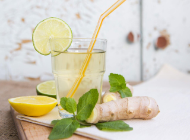

Назад
Имбирный лимонад


2.5 часа

4 порции
Ингридиенты:
Вода — 850 мл
Лимон — 2 шт.
Корень имбиря — 35-40 гр
Сахар — 50-70 гр
Мята — 2-3 шт. (веточки)
Пошаговый рецепт
- Подготовьте продукты по списку.
- В кастрюлю влейте 250 мл. воды, добавьте мяту и сахар. Доведите до кипения на небольшом огне и проварите 5 минут. Добавьте нарезанный имбирь, затем снимите с огня и дайте настояться 10 минут под крышкой.
- Процедите сироп с имбирем и мятой.
- Лимоны тщательно промойте, покатайте по столу и выжмите сок.
- Перелейте лимонный сок и сироп в кувшин, добавьте 600 мл. охлаждённой воды. После уберите кувшин в холодильник настояться минимум на 2 часа. Можно оставить на ночь.
- Готовый лимонад подавайте со льдом, свежей мятой и долькой лимона.